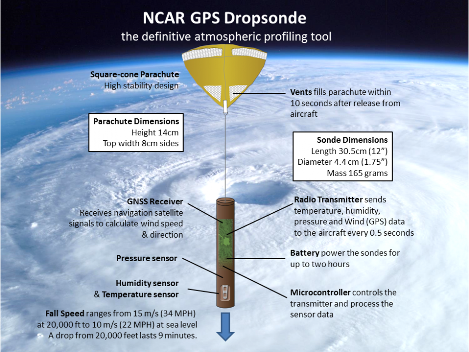

From a science point of view, I love how the atmosphere likes to throw curve balls when people think they understand everything.
Tropical Cyclones are one of the most devastating atmospheric phenomena. While visually atractive (see pictures above) when seen at a distance, these mesoscale convective systems can affect large populations, destroy property and take lives. As such, scientists and governements have funded research projects across the globe to understand how Tropical Cyclones intensify and to improve our ability to forecast their movements and strength.
The Masters of Research Project aims to aid in the understanding of Tropical Cyclone Intensity Changes through the inspection of Dropsonde Observations. Particularly, we are concerned with the role of symmetry in intensification processes and answering the question of what information can dropsonde composites give us that has not previously been observed in other datasets.
Dropsondes are scientific instruments designed in the early 1990s by the National Aeronautics and Space Administration (NASA) and the National Oceanic and Atmospheric Administration (NOAA).
Dropsondes are small metal boxes, launched from research aircraft, equipped with a parachute, a Global Positioning System (GPS) and a set of sensors.
These instruments provide detailed sampling of vertical profiles along specific parts of TCs such as the eye, the eyewall or remote regions.
National Center for Atmospheric Research Dropsonde
 Dropsonde sketch detailing dimensions sensors, parachute and GPS locations.The activities planned for the project are:
As part of the MRes several write-ups that give more detail to the projects aims and methods.
Proposal
January 24, 2018
Research objectives and proposed methodology
Literature Review
March 1, 2018
Survey of existing research on TC using observations.
See a Katrina report
November 6, 2017
Analysis of a WRF simulation for Hurricane Katrina (2005).
Interest? Email, phone or tweet mee!